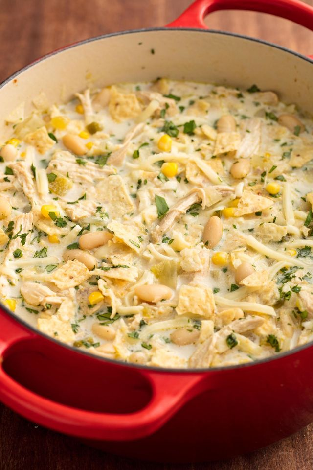

White Chicken Chili

About
Not a traditional chili, or at least not by American standards! This dish is best served spicy, with plenty of hot peppers.
Ingredients
- 1 tbsp. Olive Oil
- 1 Yellow Onion, small
- 1 Jalapeno, seeded & minced
- 2 cloves Garlic, minced
- 1 tsp. Dried Oregano
- 1 tsp. Ground Cumin
- 2 cans (4.5oz) Green Chilies
- 3 Boneless/Skinless Chicken Breasts, cut into 3rds
- 5 cups low-sodium Chicken Broth
- Kosher Salt
- Black Pepper
- 2 cans (15oz) White Beans, drained & rinsed
- 1 1/2 cups Frozen Corn
- 1/2 cup Sour Cream
- 1/4 cup Shredded Monterey Jack
- 1/4 cup Crushed Tortilla Chips
- Cilantro, chopped
Method
- In a large pot, over medium heat, heat oil. Add onion and jalapeño and cook until soft, about 5 minutes. Add garlic, oregano, and cumin and cook until fragrant, 1 minute. Add green chilis, chicken, and broth and season with salt and pepper. Bring to a boil, then reduce heat and simmer, covered, 10 to 12 minutes, until chicken is tender and cooked through.
- Transfer chicken to a plate and shred with two forks. Return to pot and add white beans and corn. Bring to a simmer and let cook, 10 minutes, using a wooden spoon to mash about 1/4 of the beans. Turn off heat and stir in sour cream.
- Ladle chili into bowls and garnish with cilantro, cheese, and chips before serving.